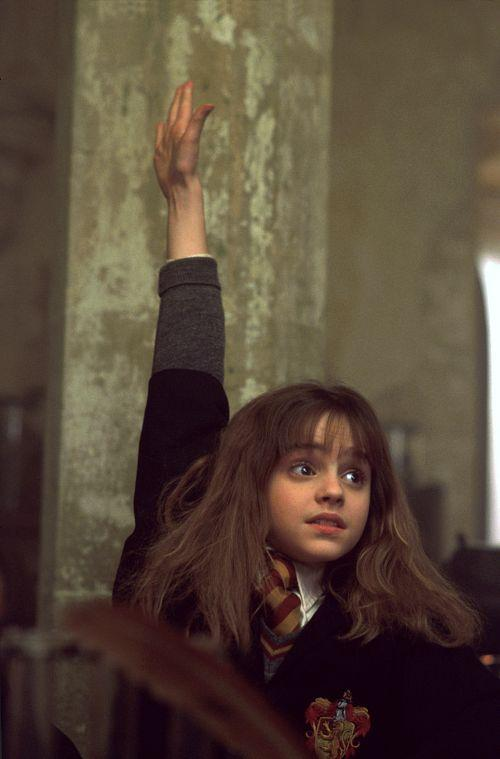

figuring things out, learning new stuff and enjoying the journey!
Hey! I'm Priesha, a first-year student, surviving college. I enjoy meeting new people, exploring new things and spending time with my friends. I'm still figuring out what I want to do, but I'm always up for learning something new. Outside academics, I enjoy reading books, and maybe dancing.
